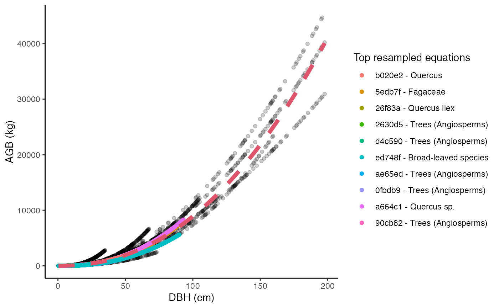

R/illustrate_allodb.R
illustrate_allodb.RdThis function illustrates the resampling of AGB values used in allodb. It creates objects of class "ggplot".
illustrate_allodb( genus, coords, species = NULL, new_eqtable = NULL, logxy = FALSE, neq = 10, eqinfo = "equation_taxa", wna = 0.1, w95 = 500, nres = 10000 )
| genus | A character value, containing the genus (e.g. "Quercus") of the tree. |
|---|---|
| coords | A numeric vector of length 2 with longitude and latitude. |
| species | A character value, containing the species (e.g. "rubra") of
the tree. Default is |
| new_eqtable | Optional. An equation table created with the
|
| logxy | Logical: should values be plotted on a log scale? Default is
|
| neq | Number of top equations in the legend. Default is 10, meaning that the 10 equations with the highest weights are shown in the legend. |
| eqinfo | Which column(s) of the equation table should be used in the legend? Default is "equation_taxa". |
| wna | a numeric vector, this parameter is used in the
|
| w95 | a numeric vector, this parameter is used in the
|
| nres | number of resampled values. Default is "1e4". |
A ggplot showing all resampled dbh-agb values. The top equations used are shown in the legend. The red curve on the graph represents the final fitted equation.
